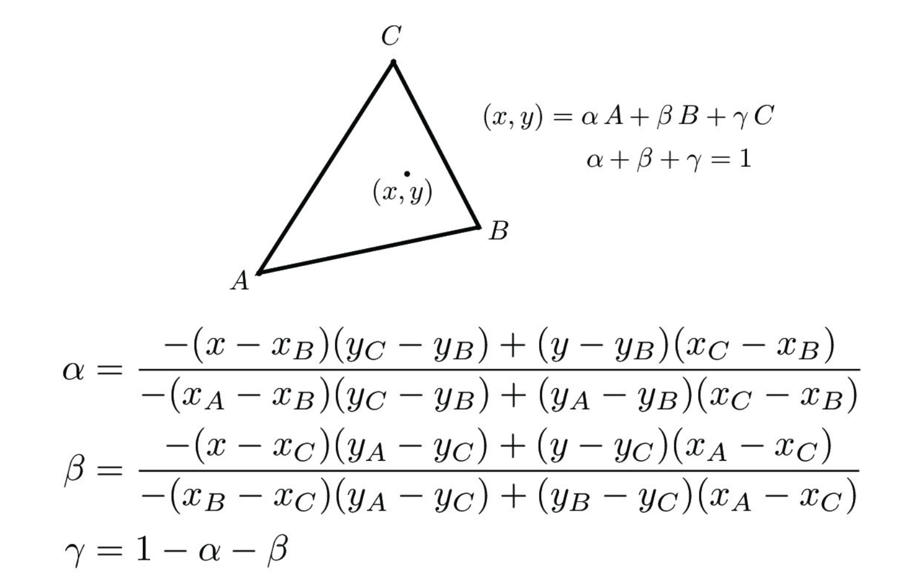
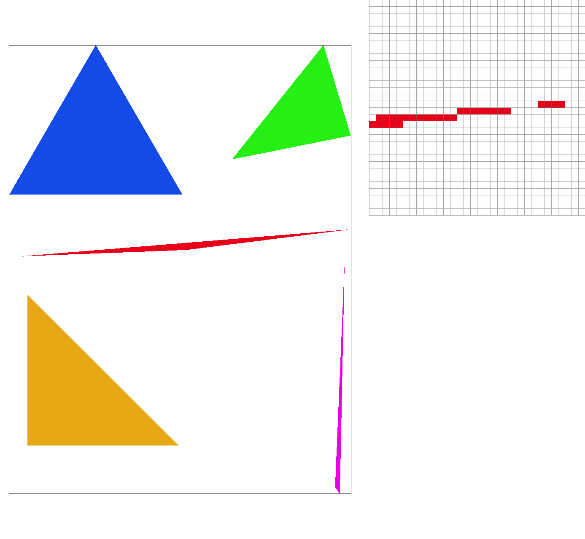
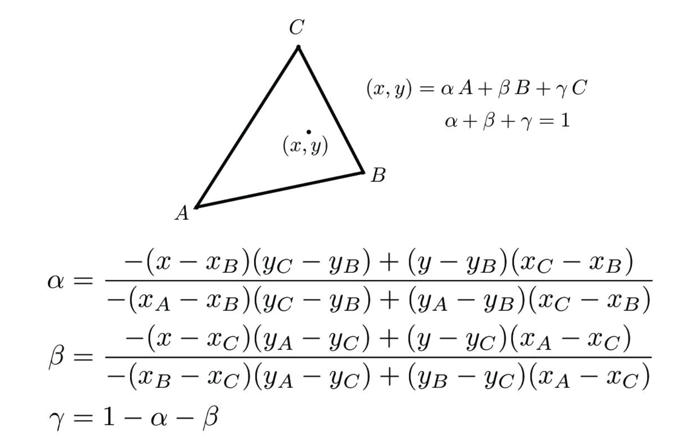
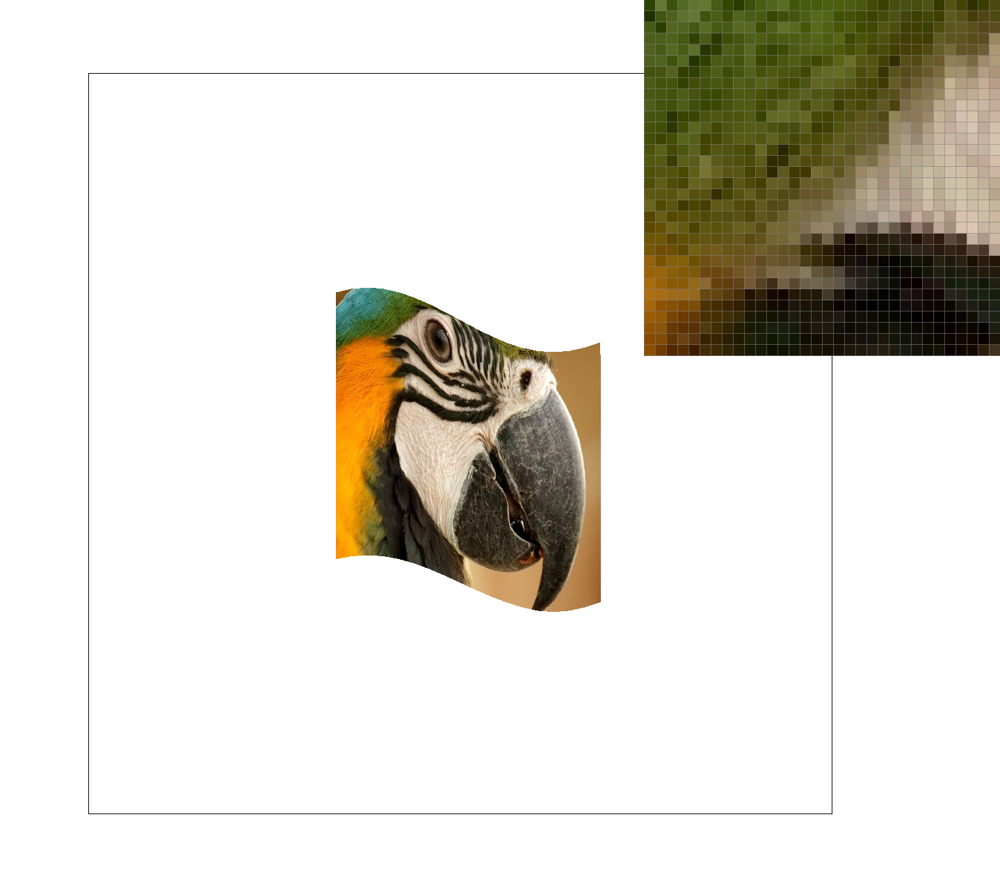
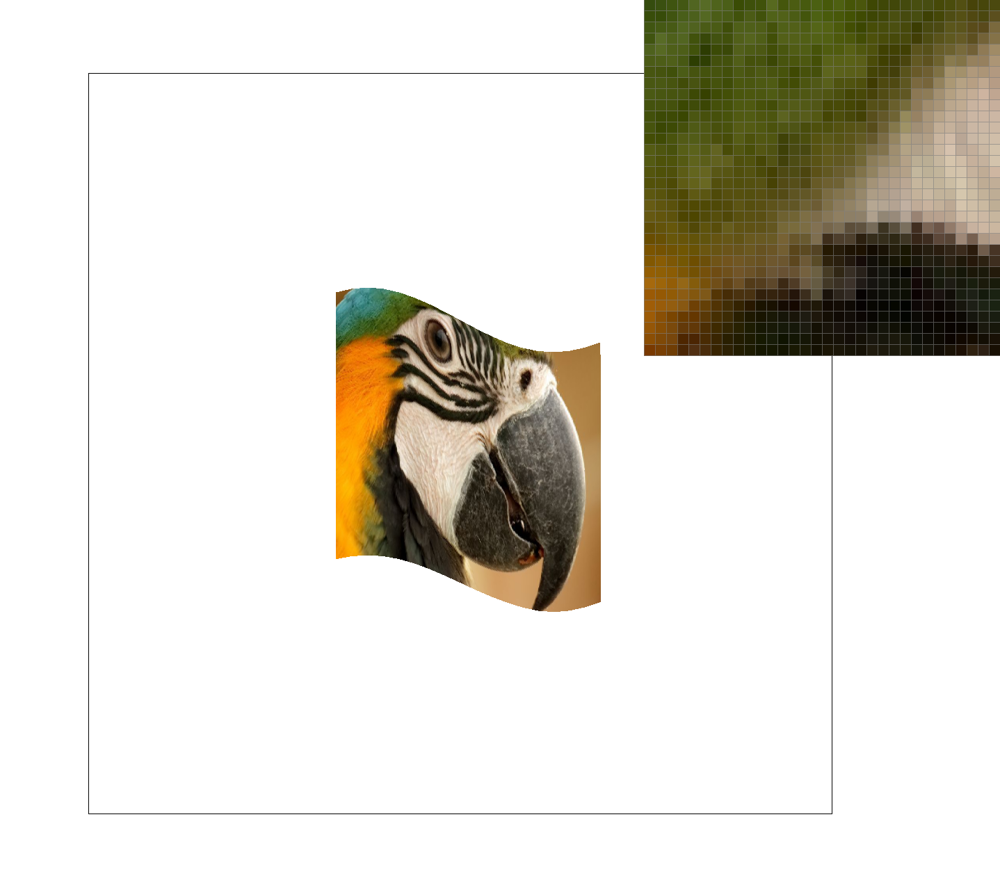
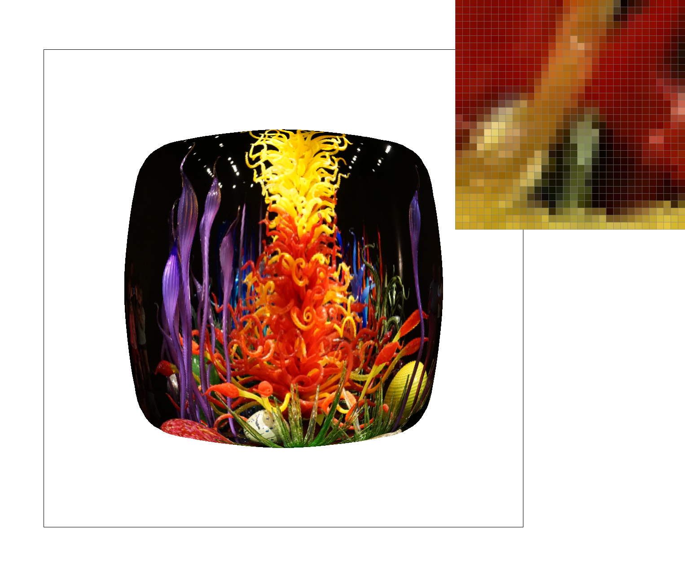
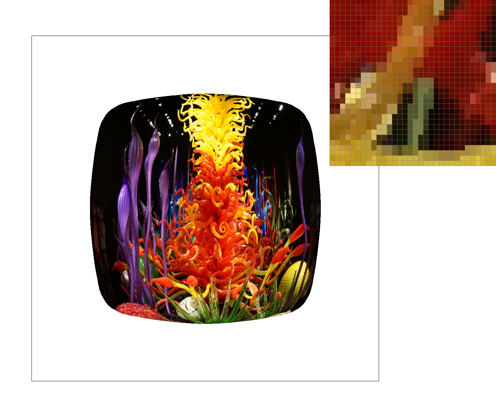

|
 |
For this project, we implemented a rasterizer that takes in pixel coordinates that will then be rendered to a 2D screen space. This process is completed by integrating the core concepts of the rasterization pipeline which include supersampling, antialiasing, and transformations. In addition, we implemented sampling for texture mapping.
The rasterization process draws a triangle to the framebuffer by converting input triangles into framebuffer
pixel values. Triangles are used because it is the most basic polygon with unique properties that
guarantee planarity, provide a well-defined interior, and provide a well-defined method to interpolate the values
at triangle vertices.
In order to convert a triangle into framebuffer pixel values, we must first sample for each pixel center inside the
triangle. To save us from unnecessarily checking the entire image for every input triangle, my implementation
restrains the search to a box around the triangle bounded by (xmin, ymin) to (xmax, ymax) where x/y-min and x/y-max
are the minimum and maximum x and y values of the three triangle vertices.
Now to check if a pixel is inside a triangle, we use the point-in-triangle test, aka the three lines test. After
defining the appropriate equations, if the result for the three lines are all greater than 0, then we have a hit,
and the pixel is in the triangle. One case we have to account for is when the points are not given in a
counterclockwise order because otherwise some shapes may not be colored in. A quick check using slopes
determines if the ordering is counterclockwise or not, and if not then we manually switch the points. If the pixel is a hit
inside the triangle then we fill that pixel with the provided color.
We have successfully implemented a basic triangle rasterization! However, these triangles have very sharp and jagged edges, some of which contain pixels that are afloat as we can see in the above image. These discontinuities in the image plane are called jaggies that result from a low sampling rate.
Jaggies are an example of aliasing which can be "smoothed" out by supersampling. To implement supersampling, we first determine how many samples per side there are, which can be calculated by taking the square root of the sample rate. Then for each pixel center within the bounding box, we further iterate through the sub-pixels which is bounded by the amount of samples per side. We determine if the subpixel is in the triangle using the methods described in Part 1, and fill in the sub-pixel with its color value which may vary slightly with its neighboring subpixels. This slight variation of color is important because now rather than only accounting for a single pixel's data as done naively in Part 1, here we can average the colors of all the sub-pixels. Then this average color will serve as the final pixel value. As a result, the triangle edges will smooth out thanks to the averaging of sub-pixel color values.
|

|
|
As we can see in the three above results, the very skinny red triangle edge smooths out as the sampling rate increases. This is because we essentially divide up the triangle into smaller and smaller pieces. So we can get more samples and average their color values together to create a more continuous image.
My cubeman took the translate, rotate, and scale transformations we had to implement to the max and decided to become a snowboarder. I added some blues to give the cubeman a decent outfit with a dark green helmet. The proportions of the original cubeman stayed the same but the positions of the limbs were heavily shifted. I also added more polygons for the goggles, snowboard, and proxy mountain.
Barycentric coordinates are a way to interpolate values at three vertices of a triangle for any given point (x,y) within the triangle. Take the left image below from this lesson about barycentric coordinates:
|
|
 |
In order to get the value at point P(x,y), we must calculate how much influence the vertices A, B, and C have on P using the formula P(x,y) = uA + vB + wC. From now on I will refer to u, v, and w as alpha, beta, and gamma to be consistent with the course. Alpha, beta, and gamma can then be thought of as weights. To solve for these weights, we can create a system of linear equations as detailed in the above right pictures taken from lecture slides. Once we have alpha, beta, and gamma, we can multiply the weights by the vertices' data to get a color value that blends the red, green, and blue vertices. This creates a triangle with smooth, blended colors.
Pixel sampling interpolates the color for a given pixel using either of two methods: nearest-pixel
sampling and bilinear sampling. Both methods begin by finding the barycentric coordinates and then using
the alpha, beta, and gamma weights to determine the uv coordinates in texture space. However, uv coordinates
can often times land in between pixels, and so we use nearest-pixel or bilinear sampling to interpolate the
values.
For nearest-pixel sampling, we do as the name suggests, and we get the color of the point's nearest neighbor.
To do this, we scale the uv coordinates up by the width and height, round both values, and then index into the
texel array. Bilinear sampling is a little trickier. It involves linearly interpolating the colors (in 1D space)
twice in the horizontal direction and then once in the vertical direction to get the desired texture value. My
workflow was as follows:
- scale up uv coordinates by the width and height
- get the nearest pixel by rounding
- get the color of the four nearest neighbors with respect to the nearest pixel
- calculate the fractional offsets, s (horizontal direction) and t (vertical direction)
- linear interpolate in horizontal direction
- u0 = lerp(s, lower left neighbor, lower right neighbor)
- u1 = lerp(s, upper left neighbor, upper right neighbor)
- linear interpolate in vertical direction
- color = lerp(t, u0, u1)
|

|

|
|
|
|
As we can see, the colors are very defined in nearest-pixel. Many of the pixels, even next-door neighbors, can have a big change in the color. Whereas in bilinear sampling, the colors and lines are smoothed out more because of the color averaging of the neighboring four pixels. There is a large difference here in this image between the two methods because the parrot has very sharp edges with large color differences. Thus averaging would be more beneficial to nicely smooth the edges compared to an image with low changes in color where the neighboring pixels are very similar. In sum, bilinear seems to be best for the high frequency images, and nearest-pixel can be used for the low frequency images.
Level sampling interpolates the color for a given pixel between different resolutions levels. These levels make up
a Mipmap, invented by Lance Williams, in which each level is downsampled by 1/2 until we have a 1x1 pixel which is
just the average color for the image. We can level sample in three ways: L_ZERO, L_NEAREST, and L_LINEAR.
In order to compute the appropriate Mipmap level for a point (x,y), we first calculate the barycentric coordinates of the
points (x+1,y) and (x,y+1), passing the results to tri->color as p_dx_bary and p_dx_bary. We then use these weights to
calculate the uv coordinates, sp.p_dx_uv and sp.p_dy_uv, which will be passed into tex->sample(sp). Finally the difference
vectors, dx and dy, are calculated and scaled by the original image resolution's width and height. Now that we have dudx, dvdx,
dudy, and dvdy, we can plug it into the following formula, where D is the Mipmap level we are solving for:
The L_ZERO method samples from the zero-th Mipmap, which is just the full resolution image. We can retrieve the color
by simply calling the specified pixel sampling method. For L_NEAREST, we compute the Mipmap level, round to the nearest
level, and then pass that level into the psm so we can access the correct MipLevel and its corresponding texels. Lastly for
L_LINEAR, we compute the level and get the colors for the adjacent MipLevels by floor(level) and ceil(level). Then we linearly
interpolate between col_above and col_below using the fractional offset, level - floor(level).
The following is a picture I took at the Chihuly Garden and Glass exhibit in Seattle.
|
|

|
|

|
|
Changing between the different pixel sampling methods does not hurt the speed because both methods do not require the use of a for loop. Similarly, when sampling different MipLevels, getting the MipLevel only requires arithmetic given the correct parameters and retrieving the color requires indexing. When using bilinear sampling, changing the level sampling from zero -> nearest -> linear further blurs the image because the amount of times we average colors increases. When using nearest-pixel sampling, changing the level sampling from zero -> nearest shows little change because we ignore all neighboring pixels. There is slight change when the level sampling is linear because we are interpolating between two MipLevels. Speed is a big factor when it comes to adjusting the numbers of samples per pixel. This is because we use a double for loop to iterate through each pixel, and then we proceed with another double for loop to iterate through all the sub-pixels. As we increase the sample rate, the amount of sub-pixels increases and thus it takes longer to loop through every single one. However, supersampling is a great antialiasing technique to get rid of jaggies, and so while the program may run a little slower, it is a small price to pay for a better looking, smoother, continuous image.
If you are not participating in the optional art competition, don't worry about this section!